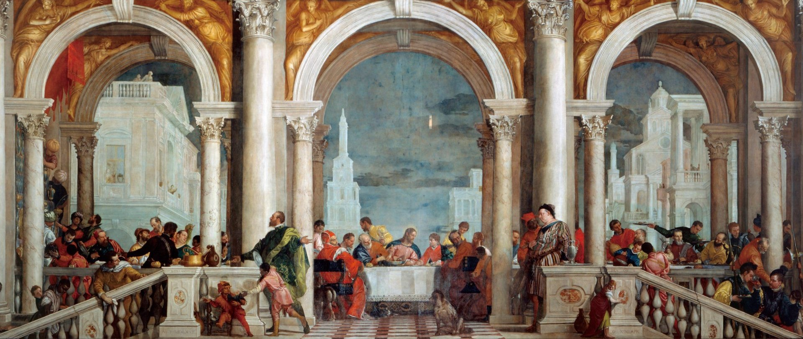

Ренесанс
1400 - 1550
ОСНОВНІ ДІЯЧІ: П'ЄРО ДЕЛЛА ФРАНЧЕСКА • САНДРО БОТТІЧЕЛЛІ • ПЕРУДЖИНО • АНДРЕА МАНТЕНЬЯ • ФІЛІППО ЛІППІ
Термін "Ренесанс", що об'єднує культуру Раннього, Північного та Високого Відродження, описує відродження інтересу до мистецтва в Європі та його інтенсивний розвиток. Поняття з'являється в XV столітті й означає повернення італійців до культурного минулого, тобто до античності. З тих часів збереглося безліч творів мистецтва і письмових джерел, але ще більше втрачено. Першим і найважливішим відкриттям італійців став винахід прямої перспективи. Це сталося у Флоренції, місті, яке в XV столітті стало головним містом Відродження. Виникнення перспективи ознаменувало новий погляд на світобудову. Інші технології та відкриття, як-от математичні закони, винахід друкарської машини, прориви в астрономії, виробництво свинцевих олівців, використання олійних фарб, відливання бронзової скульптури за виплавлюваною восковою моделлю, подарували нові ідеї. У цю епоху головною цінністю стає людська особистість - ця філософія отримує назву гуманізму. Уперше з часів Античності мистецтво стало переконливо реалістичним. Інтерес до людини тягне за собою появу жанру портрета. Портрети в епоху кватроченто роблять докладними й детальними, і зображені фігури, і тло залиті яскравим світлом. Важливо, що найчастіше герой зображений саме на тлі природи - в епоху Відродження вона стає метафорою прекрасного гармонійного світу. Лінія горизонту зображена дуже низько, що візуально підносить людську постать над пейзажем - тобто підносить людину над рештою світу. Відродження досягло піку наприкінці XV - початку XVI ст. У XV столітті італійські майстри використовували міцну, в'язку і непрозору темперну фарбу. Ці обмеження не давали можливості ускладнювати і збагачувати відтінки. На початку XVI століття колорит ренесансної картини сильно зміниться завдяки переходу від темперної фарби до олійної - з прозорою, легкою текстурою. Живопис стає все більш незалежним від церкви. У ньому з'являються античні сюжети - наприклад, Венера у Боттічеллі. Однак у картинах зберігаються і середньовічні риси - зокрема, симетрія. Майстри почуваються більш вільно, оскільки з'являються приватні замовлення, які не виставляються на загальний огляд. Церква теж продовжує постачати замовлення, тож біблійні сюжети зберігаються - але знаходять нові трактування. Зокрема, у Венеції починають поміщати античні сюжети в дуже реалістичні й правдоподібно прописані сучасні декорації. Художники досягли статусу, порівнянного зі статусом поетів і придворних: геній Леонардо да Вінчі (1452-1519) був визнаний у Флоренції, Мілані, Римі. Відомий примітний епізод, коли Карл V нахилився, щоб підняти кисть Тиціана, яка впала.
